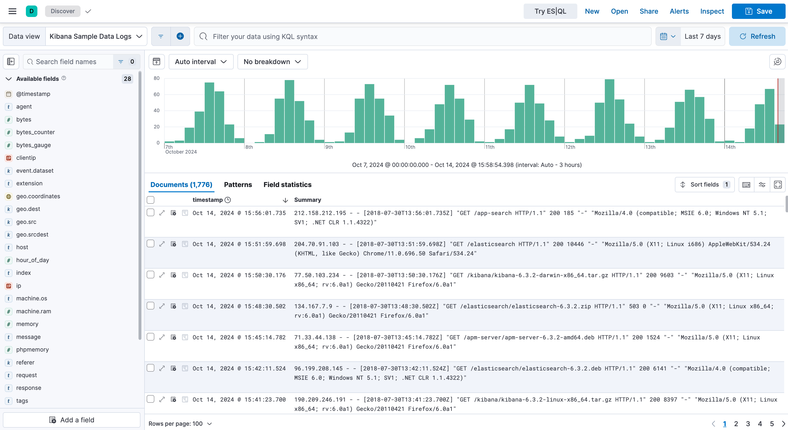

Discover
editYou have questions about your data. What pages on your website contain a specific word or phrase? What events were logged most recently? What processes take longer than 500 milliseconds to respond?
With Discover, you can quickly search and filter your data, get information about the structure of the fields, and display your findings in a visualization. You can also customize and save your searches and place them on a dashboard.
